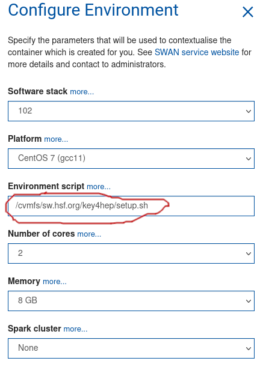

1.2. Running the software in SWAN notebooks#
Page contributors
Valentin Volkl, Juraj Smiesko
Learning Objectives
Learn how to run tutorials in SWAN notebooks
SWAN is a web service for running jupyter notebooks at CERN, and is a very convenient way of running tutorials if one has a CERN computing account.
SWAN can be used only with a browser and is reached by visiting https://swan.cern.ch.
After logging in, SWAN will ask you to configure your session. The default software stack (102 at the moment can be kept, but to use the Key4hep, software the following environment script has to be used:
/cvmfs/sw.hsf.org/key4hep/setup.sh

Documentation on how to use notebooks is easy to find online (https://jupyter-notebook.readthedocs.io/en/latest/notebook.html). Basically, the code cells behave like a muli-line python prompt (as in ipython) and can be executed with Shift+Enter. Variables are kept between cells, and the working directory is persistent too - notebooks are run in your eos user directory under /eos/user/v/vavolkl/SWAN_projects/ (substitute v and vavolkl for your username initial and username).
The default kernel is running python3, but you can run general bash commands as well, either by prefixing a command with an exclamation mark
!ls
or the bash cell magic (works for multiple files):
%%bash
ls
Setting environment variables will be only effective for the current cell though.
Plots can be drawn directly in the notebooks, see for example https://cern.ch/swanserver/cgi-bin/go?projurl=https://root.cern.ch/doc/master/notebooks/fillrandom.py.nbconvert.ipynb